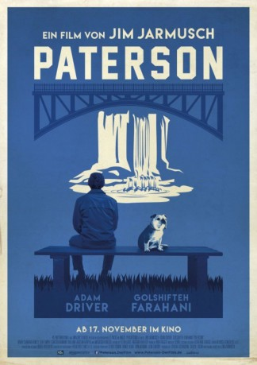

#6347 Paterson
 
 IMDB-Wertung: 7.4 / 10
IMDB-Wertung: 7.4 / 10  Tomatometer: 96
Tomatometer: 96  Metascore: 0
Metascore: 0 
PATERSON erzählt die Geschichte des Busfahrers Paterson, der genauso heißt wie der Ort, in dem er lebt. Die Kleinstadt in New Jersey und ihre eigentümlichen Bewohner sind die Inspiration für seine Gedichte, die er Tag für Tag in der Mittagspause auf der Parkbank verfasst. Die Welt seiner Frau Laura dagegen ist im ständigen Wandel. Fast täglich hat sie neue Träume, jeder einzelne von ihnen ein anderes, inspirierendes Projekt. Paterson liebt Laura und sie ihn. Er unterstützt ihre neugefundenen Ambitionen und sie bewundert seine Gabe für Poesie.
Jahr: 2016
Dauer: 118 Minuten
FSK: 0
Land: USA Studio: Bleecker StreetTonspuren: DTS - ,
Untertitel: Deutsch,
Auflösung: 1080p (1920x1040) Größe: 5222 MB
Genre: Drama, Komödie, Liebe
Regisseur:  Jim Jarmusch
Jim Jarmusch
Drehbuch: Jack Burns
Soundtrack:
Darsteller:
 Adam Driver als Paterson
Adam Driver als Paterson Golshifteh Farahani als Laura
Golshifteh Farahani als Laura- Nellie als Marvin
 Rizwan Manji als Donny
Rizwan Manji als Donny- Jaden Michael als Boy on Bus 2
 Barry Shabaka Henley als Doc
Barry Shabaka Henley als Doc- Trev Parham als Sam
- Troy T. Parham als Dave
- Brian McCarthy als Jimmy
 Frank Harts als Luis
Frank Harts als Luis Luis Da Silva Jr. als Blood in Convertible
Luis Da Silva Jr. als Blood in Convertible- Chasten Harmon als Marie
- William Jackson Harper als Everett
 Method Man als Method Man
Method Man als Method Man Kara Hayward als Female Student
Kara Hayward als Female Student- Jared Gilman als Male Student
 Sterling Jerins als Young Poet
Sterling Jerins als Young Poet- Johnnie Mae als Doc's Wife
- Owen Asztalos als Small Boy 1
- Jorge Vega als Small Boy 2
- Sophia Muller als Small Girl
 Masatoshi Nagase als Japanese Poet
Masatoshi Nagase als Japanese Poet- Martin Van Treuren als Coverall Man , uncredited
- Volieda Webb als Bar Patron , uncredited
- Dominic Liriano als Boy on Bus 1
- Kacey Cockett als Woman in Red
- Helen-Jean Arthur als Older Woman 1
- Joan Kendall als Older Woman 2
Datei: X:\2016(N-Z)\Paterson (2016, FSK0, 1920x1040).mkv seit 09.06.2017
Festplatte: HD 2016(A-Z)
 Es gibt insgesamt 182 Filme in der Gruppe '2016(N-Z)'
Es gibt insgesamt 182 Filme in der Gruppe '2016(N-Z)'